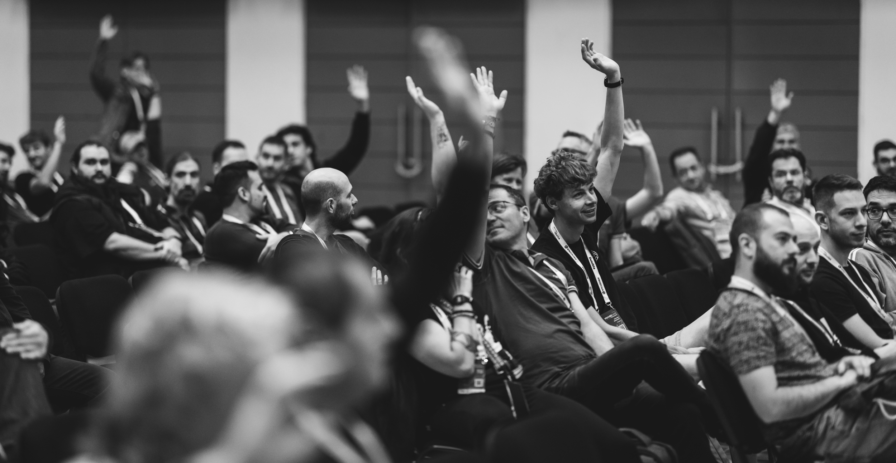
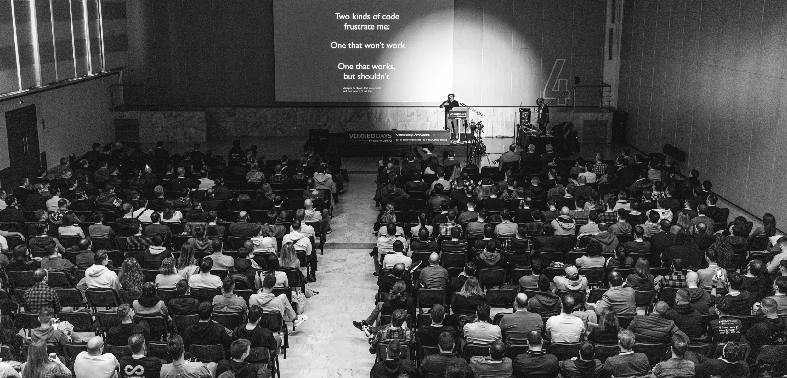
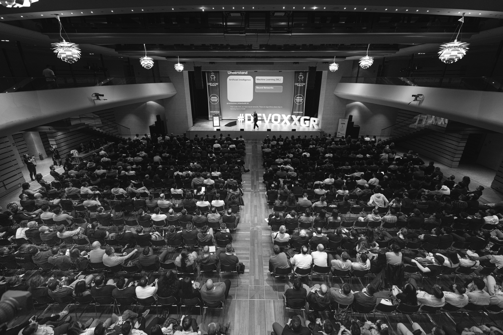
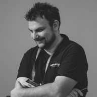
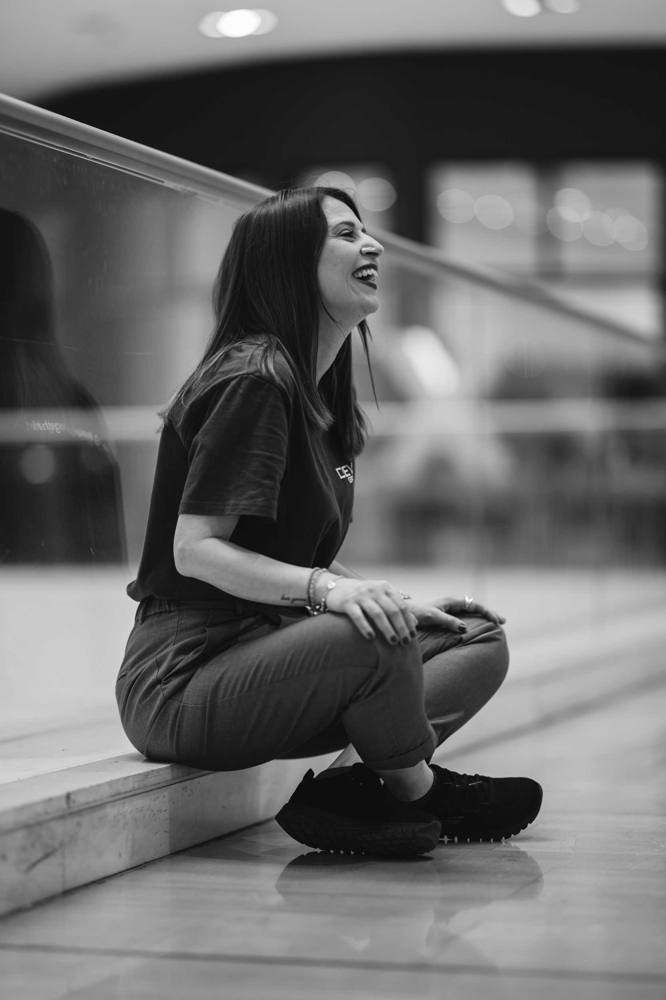
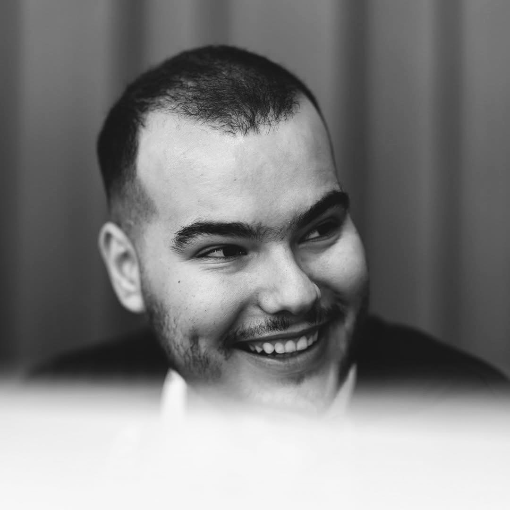
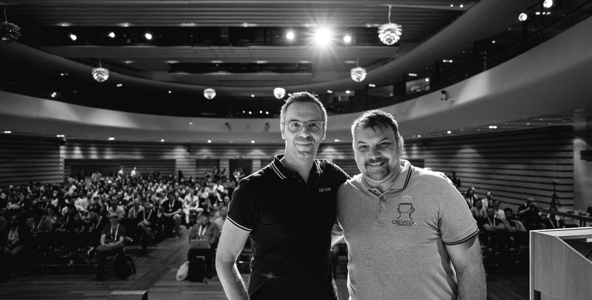
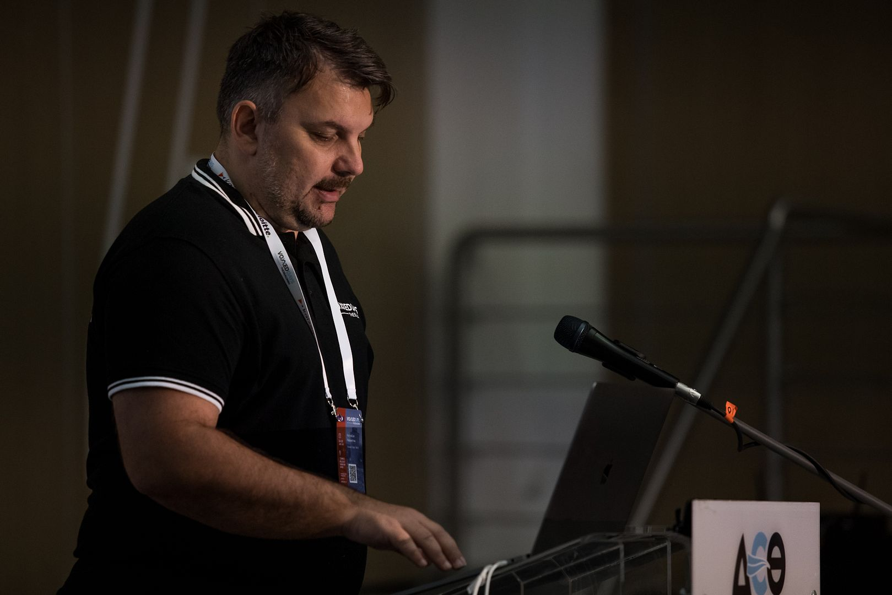
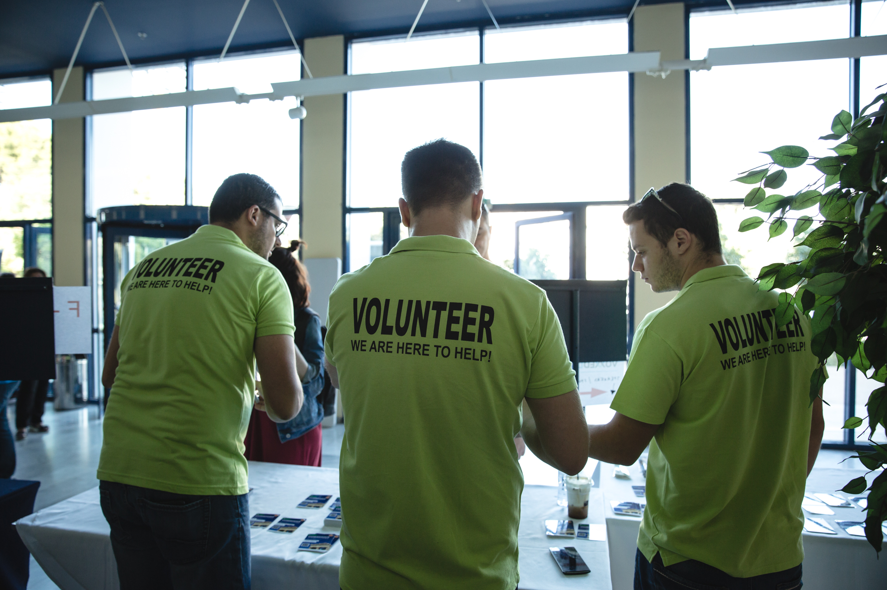
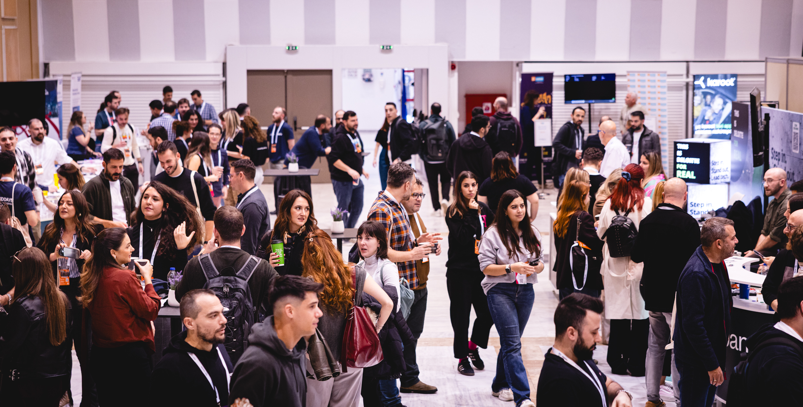

Bringing together experts, enthusiasts, and learners through world-class conferences since 2016.
Conferences
Total Participants
Speakers
Years of Excellence
Based in Thessaloniki, Greece, SoftConf was founded in 2016 by one of the main local community leaders. We are driven by community demands and are always seeking to provide the latest content and trends in the software industry.
We are dedicated to organizing high-quality conferences, workshops, and other software development-related events such as hackathons, code retreats, and coder dojos. Additionally, our highly respected software professionals provide consulting services that aim to improve our clients' software development processes and the overall quality of their products.

Explore our flagship tech conferences.

Join us for a historic milestone! The 10th anniversary edition of the largest tech gathering in Northern Greece. Expect top-tier speakers, 700+ attendees, and deep technical sessions.
Event Website →
The ultimate developer community event returns to Athens. After breaking records in our past editions, we are preparing an even bigger tech celebration.
Event Website →Officially launched in 2023, Devoxx Greece took the baton to become the ultimate flagship developer community event in the country. Gathering over 1,350+ delegates and global speakers annually at the Megaron Athens Concert Hall, it continues to push the boundaries of technology. The next highly anticipated edition is set for April 15-17, 2027.
The foundation of the flagship Athens events. Running successfully from 2017 to 2019 and making a grand return in 2022, Voxxed Days Athens introduced world-class tech sessions to the local community. Following its exceptional growth and record attendance, it officially evolved into Devoxx Greece starting in 2023.
Starting back in 2016, Voxxed Days Thessaloniki has established itself as the premier tech hub of the Balkans. Year after year, it consistently hosts dozens of specialized sessions and unites hundreds of passionate software engineers. Its long-standing success proved the immense thirst for technological innovation in Northern Greece and set the standard for all subsequent events.
Voxxed Days Ioannina was introduced to capture and fuel the rapid technological ecosystem emerging in Epirus. Designed as a recurring anchor for the region's top-tier university and growing tech scene, it serves as a vital bridge connecting local talent with leading companies, ensuring that innovation thrives consistently across the regional periphery.
Making its dynamic debut in Heraklion, Voxxed Days Crete successfully united the island's vibrant developer community with the global software landscape. By bridging academic research with advanced industry practices, this landmark event firmly anchored Crete as a strategic tech hub—leaving the door wide open for the community to reconvene and spark new ideas in the future.
We are dedicated to organizing high-quality conferences and tech gatherings. We pay attention to every detail from initial planning to successful execution.
We organize hands-on workshops where attendees learn from highly respected professionals in the field about hot software development topics and the latest industry trends.
We provide a series of specialized training courses, such as Go(lang), designed for all client groups based on their specific needs to ensure the best value.
We provide a large variety of consulting services aiming to improve our clients' software development processes and overall software quality.
The dedicated minds behind your favorite tech events.

Founder & Lead OrganizerAs a prominent local community leader, Patroklos brings years of technical and organizational expertise. He ensures that every SoftConf event aligns perfectly with the latest trends in the software industry.

Event Coordination & AdministrationThe organizational force of SoftConf. Marianna handles the meticulous details of our events, ensuring sponsors, speakers, and attendees experience a flawless and highly professional environment.

Digital Marketing & Web SpecialistA Computer Science & Biomedical Informatics student bringing a fresh, innovative perspective to our digital footprint. Responsible for managing our Social Media strategy, Marketing initiatives, and web development.
Moments from our incredible conferences across the years.




Stay updated with official announcements and post-event wrap-ups from our major conferences.
A comprehensive look back at this year's premier conference in Athens, breaking all previous attendance records and setting new industry standards.
Read Full Release →Highlights and key takeaways from our highly successful inaugural tech event held in Heraklion, Crete, this past September.
Read Full Release →Recapping the excitement, insights, and community spirit from the leading tech hub of the Balkans in Northern Greece.
Read Full Release →Discover how our first edition in Epirus successfully bridged the gap between the academic community and the fast-paced tech industry.
Read Full Release →